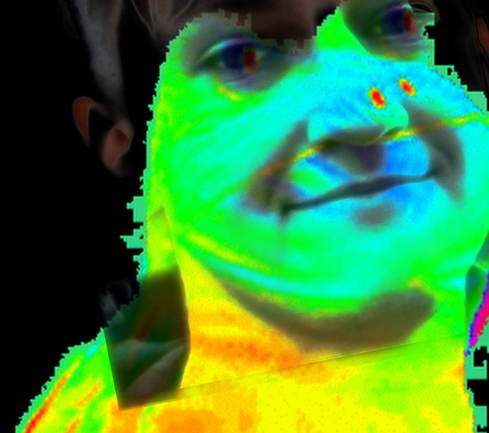

//image clicker //website challege //moving imahge guy script 
Click here for a 24/7 gaming radio
The DKG Website
Check out the DanTDM Series
____Preview:
Begin the Webstie Challenge (enable popups)
if it stops working, press again